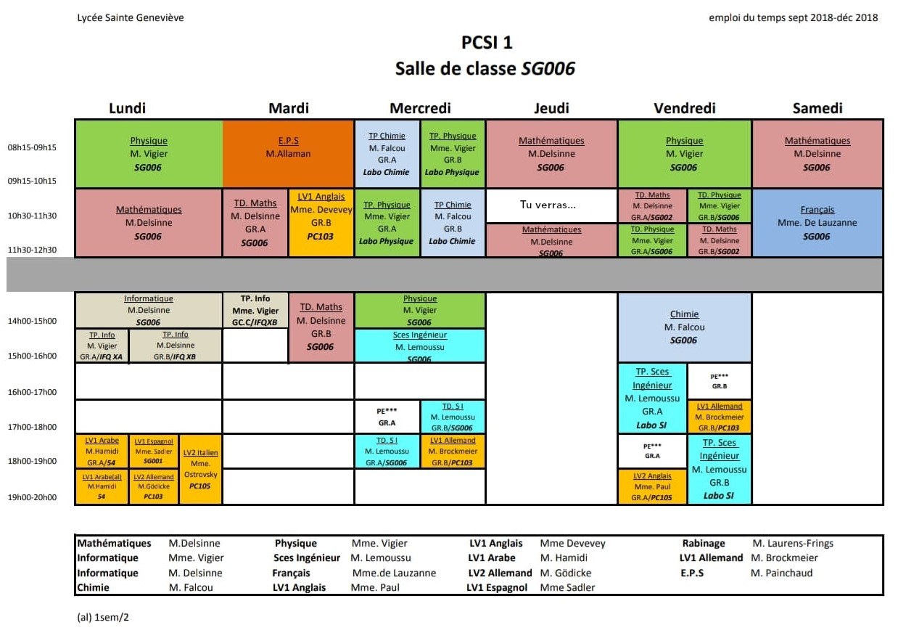

Vous voulez en savoir plus sur notre filière ? Vous êtes allé sur la bonne page. Comme vous le savez peut-être, Ginette est une CPGE très polyvalente puisqu'elle propose 5 types de filières : PCSI, MPSI, PTSI, BCPST et ECS. Nous vous épargnons la longue et fastidieuse description de ces acronymes.
Mais alors, qu'est-ce que la PCSI ? Cette filière est assez proche de la MPSI. Mais notre approche des sciences est plus expérimentale. En termes plus pragmatiques, nous avons moins de maths et plus de chimie.
Quelques éléments pout compléter ce fabuleux emploi du temps : - Les heures de TP et de TD ont lieu en demi-classe - Il est possible de finir à 20h mais cela concerne surtout les LV2 - Il faut ajouter deux ou trois heures de khôlle par semaine (horaires variables) - N'oublions pas non plus la composition hebdomadaire à 13h30 le samedi
Malgré la dominante scientifique, vous ne devrez en aucun cas négliger les matières littéraires dont le coefficient est dangereusement élevé aux concours. En parlant de concours, sachez que la MPSI et la PCSI aboutissent aux mêmes écoles, à ceci près que la PCSI permet également de préparer les écoles de chimie.
Nous avons une bonne nouvelle pour ceux qui dénigrent la SI. A Noël, vous pourrez choisir entre poursuivre la SI avec une peu de chimie (PSI) et vous consacrer entièrement à la chimie (PC).
Pour finir, vous aurez probablement remarqué les deux heures de sport hebdomadaires. Elles sont obligatoires mais néanmoins très agréables. Le sport est vital à Ginette. Nous nous devons tous d'appliquer la célèbre maxime : Mens sana in corpore sano. Vous pourrez vous épanouir dans ce domaine le jeudi après-midi, qui, comme vous l'aurez justement noté, est libre. Mais ce sera également l'occasion pour vous de vous adonner à une Activité Sociale (AS). Quoi qu'il arrive, vous trouverez inévitablement une activité qui vous passionne pour occuper votre après-midi !